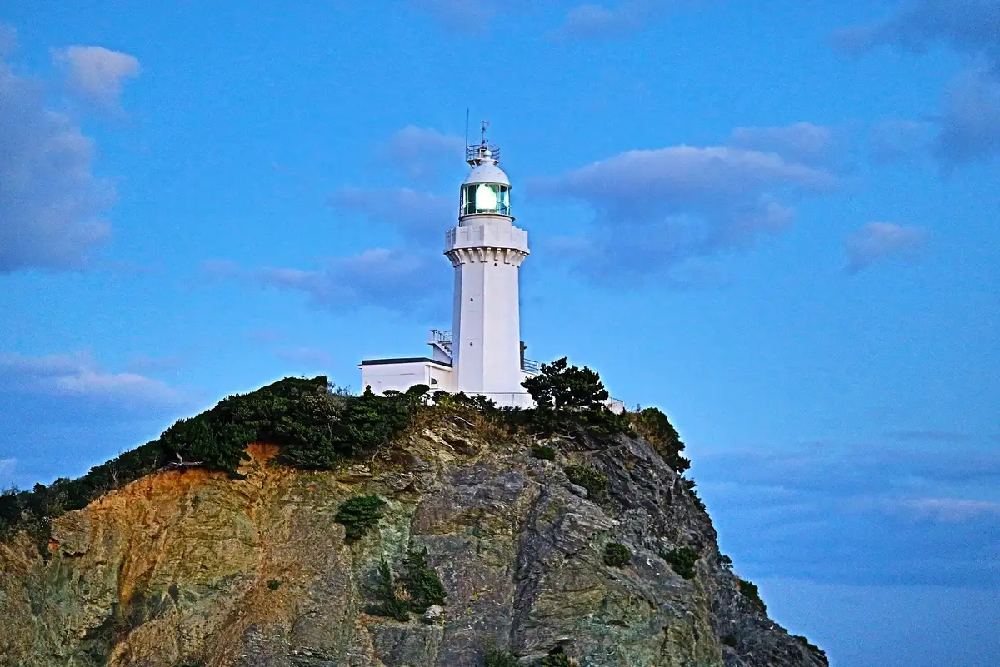
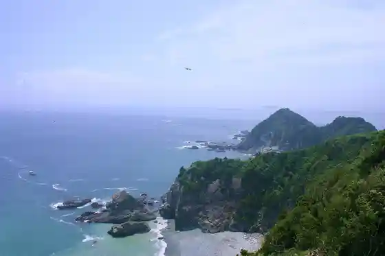
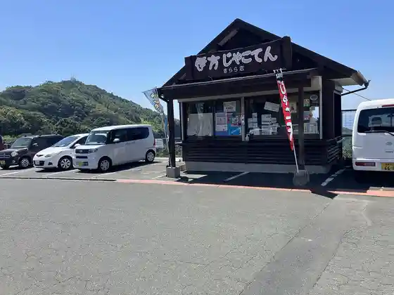
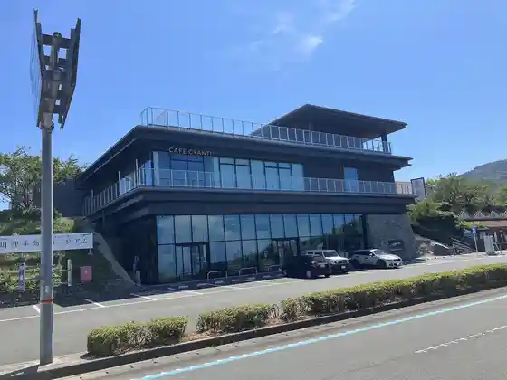
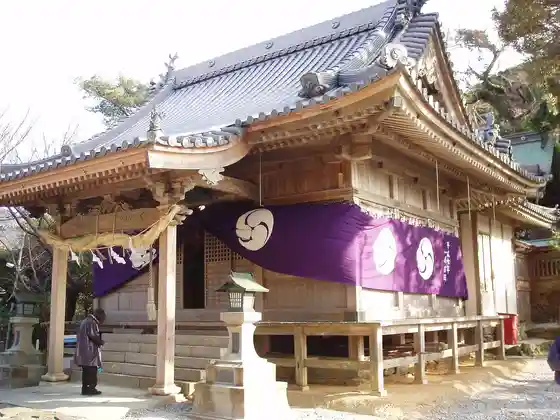

Ikata
Ikata · Ehime
Ikata
Highlighted on the Ehime map.

Stay
Kamegaike Onsen Kame no Yu Bettei
Ebisuya Ryokan
Minshuku Oiwa
HANARE stay&space
Minshuku Michimoto
Dining
Dining Umi
Kafe Ki to Ki
Jierateria
Izakaya Heri
Kiyomi
Kiyomi Jakoten Bu
Maruma Shokudo
Sadamisaki Hanahana
Shirasu Shokudo
O Shokuji Tokoro Uwami
CAFE&RESTAURANT NEW PORT
Mariina Tei
Ikata Jakoten
Fusha
Atorie Kafe Pi-Pi
O Ryori Hirose
Onsen
Kamegaike Onsen Kame no Yu Bettei Furo
Ebisuya Ryokan Furo
Minshuku Oiwa Furo
Sights
Sadamisaki Lighthouse
Sadamisaki

Roadside Station Ikata Kirara Kan

Roadside Station Sadamisaki Han Shima Museum

Misaki Hachiman Shrine

Sadamisaki Dai 4 Hodai Ato